Key Takeaways
- Configure Microsoft AutoUpdate (MAU) preferences using Intune to manage update behaviour for Microsoft applications on macOS devices.
- Control automatic updates and define update preferences to maintain consistent application versions across managed Mac devices.
- Simplify update management by centrally deploying MAU configuration policies through Intune.
- Improve application security and compliance by ensuring Microsoft applications receive timely updates.
- Configure Windows App update preferences on macOS using Intune to select the Microsoft AutoUpdate channel and define the application’s update source.
In this article, I am going to discuss how to configure Microsoft AutoUpdate for Windows App on macOS Devices using Microsoft Intune. Configure Microsoft AutoUpdate (MAU) for Windows App on macOS devices using Microsoft Intune to manage the application update process centrally. This configuration allows IT administrators to define the update preferences for Windows App, including the Application ID (MSRD10), Channel Name (Current Channel), LCID (1033), and Manifest Server (Current Channel). By deploying these settings through Intune, administrators can manage Windows App update behaviour and maintain a consistent update experience across managed Mac devices.
Table of Content
Create a Microsoft AutoUpdate for Windows App on macOS Devices Configuration Policy in Intune
The first step in configuring the Microsoft AutoUpdate for Windows App on macOS Devices is to sign in to the Microsoft Intune Admin Center with your admin credentials.
- Navigate to Devices > macOS > Manage devices > Configuration
- Click on Policies > +Create > +New Policy
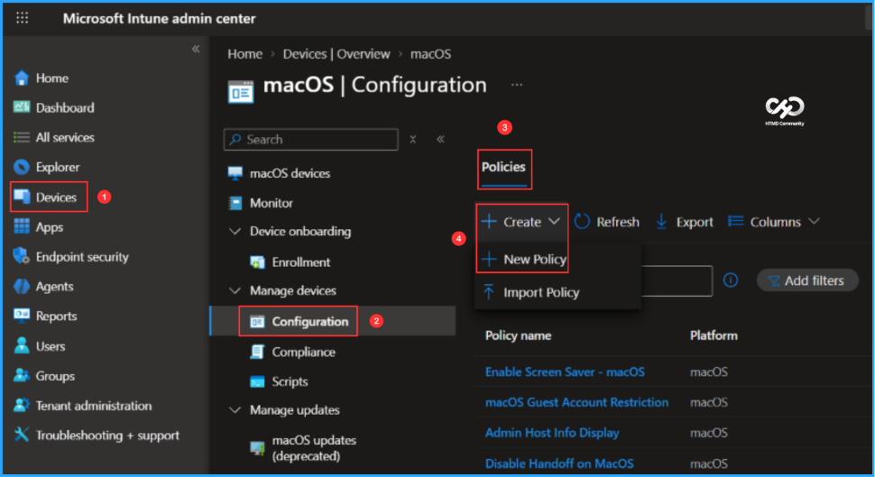
Next, create a new configuration profile from scratch using the Settings Catalog, which provides a library of available Mac Intune configuration settings. Select the options mentioned below to continue.
- Platform: macOS
- Profile type: Settings catalog
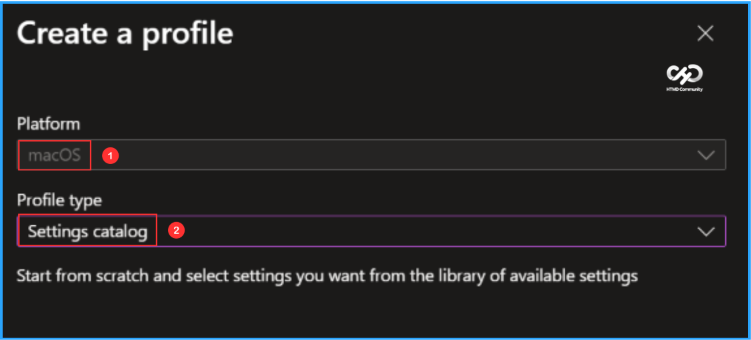
In the Basics pane, enter “Microsoft AutoUpdate Configuration for Windows App on Mac Devices” as the policy name and add a brief description explaining its purpose. Description is optional, but it is always good to identify the intent of the policy. Once completed, click Next.
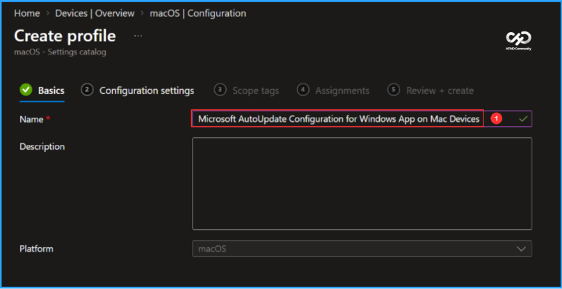
In the Configuration settings pane, click + Add settings to select and configure the required Microsoft AutoUpdate for Windows App settings.
Note: In Microsoft’s testing, admins may experience performance degradation when they add more than 400 settings to a single policy. While we continue to improve, please keep this in mind when designing your policies.
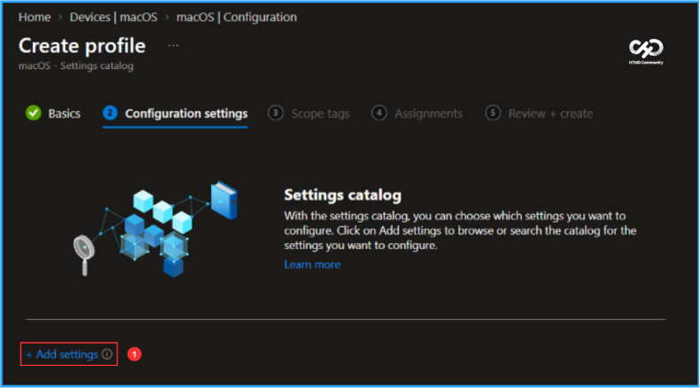
In the Settings picker, search for “Windows App” and select it to view the available configuration options. Choose the settings you want to manage, as shown below, and then close the Settings picker.
- Microsoft AutoUpdate (MAU)
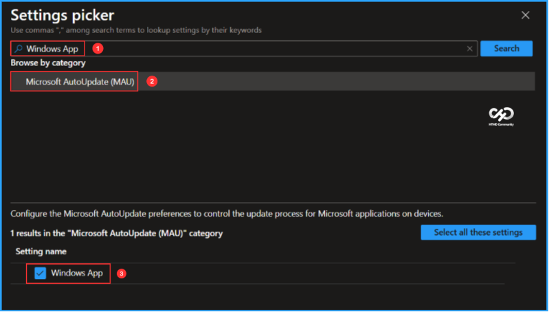
On the Windows App’s Microsoft AutoUpdate (MAU) configuration settings page, enable and configure the required options based on your organisational requirements. Once the settings are configured, click Next.
- Application ID: MSRD10
- Channel Name: In the drop-down, select Current Channel
- LCID: 1033
- Manifest Server: In the drop-down, select Current Channel
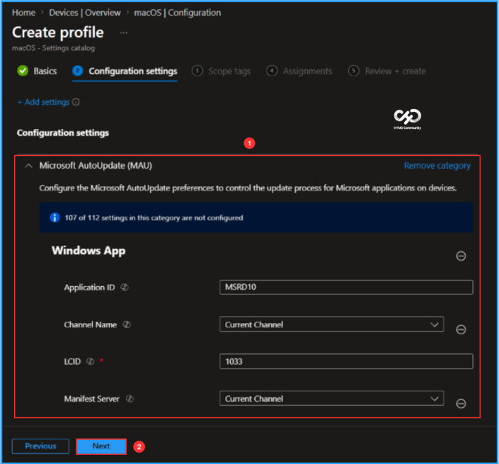
On the Scope tags page, keep the Default scope tag or select a custom scope tag based on your organizational requirements, then click Next to continue.
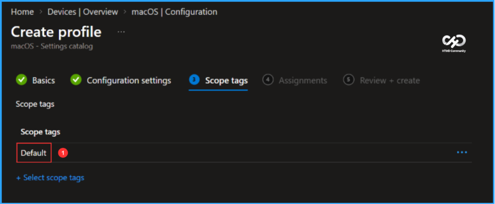
For initial testing, I’m assigning the policy to the Mac Devices – Test group. Under Included groups, click Add groups and select the required device group. In this example, no assignment filters or excluded groups are configured.
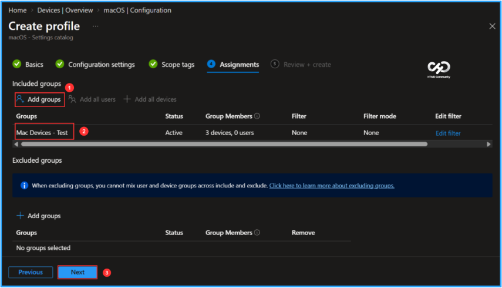
On the Review + create page, verify all settings configured for the Microsoft AutoUpdate for Windows App on macOS Devices policy. Once everything looks correct, click Create to complete the policy creation and deployment.
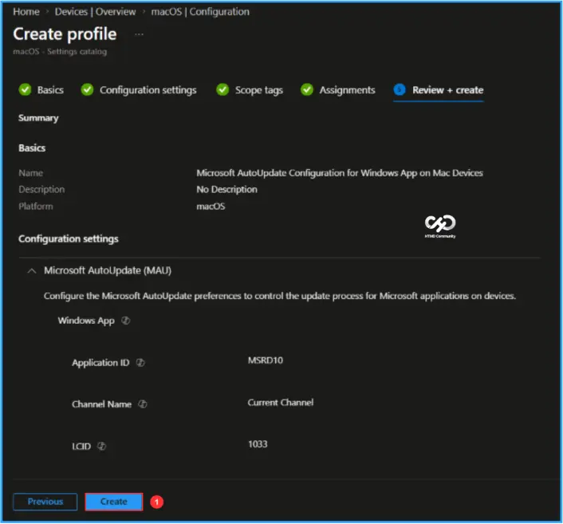
Monitor the Microsoft AutoUpdate for Windows App on macOS Policy Deployment
The configuration policy is now assigned to the Mac Devices – Test a Microsoft Entra ID group. Once the device syncs with Intune, the policy will be applied. You can monitor the deployment status from the Intune Portal by following the steps below.
- Navigate to Devices > macOS > Configuration > Search for the Microsoft AutoUpdate Configuration for Windows App on Mac Devices configuration policy.
- Under the Device and user check-in status, you can see the policy’s deployment status
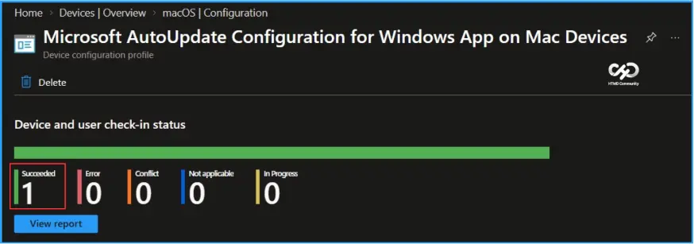
End User Experience
Here is the end user experience after applying the Windows App configuration policy. You will receive a notification from Microsoft AutoUpdate. In this example, since I have opened the Windows App on my Mac, it provides a message stating: “Your organisation is enforcing app updates.” You will need to save your data and quit the specified apps before the indicated time. You can either click on “Quit Apps and Update,” or once the time expires, the updates will be installed automatically. This shows that the policy is working as expected.
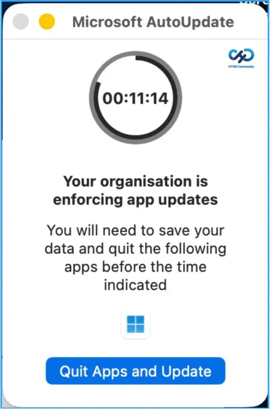
Need Further Assistance or Have Technical Questions?
Join the LinkedIn Page and Telegram group to get the latest step-by-step guides and news updates. Join our Meetup Page to participate in User group meetings. Also, join the WhatsApp Community and the WhatsApp channel to get the latest news on Microsoft Technologies. We are there on Reddit as well.
Author
Vaishnav K has over 13 years of experience in SCCM, Intune, Modern Device Management, and Automation Solutions. He writes and shares knowledge about Microsoft Intune, Windows 365, Azure, Entra, PowerShell Scripting, and Automation. Check out his profile on LinkedIn.